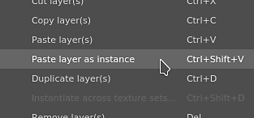
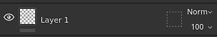
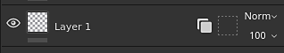
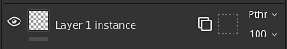
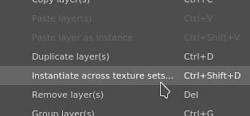
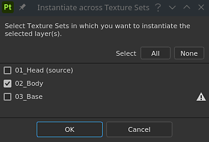
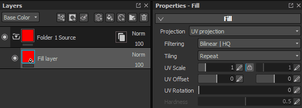
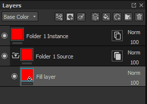

Name
Layer instancing allows to synchronize layer parameters across multiple layers and Texture Sets while still being able to generate a mesh dependent result.
When a layer instance is created, the original layer (or source layer) is used to replicate parameters across all the existing instances. Only the source layer can be modified.
To create a layer instance:

Once an instance has been created, the source and target layer will display a new icon. This icon is a button that can be used to navigate between a source layer and its instances more easily, without having to manually switch between Texture Sets (see below).
|
Name |
Icon |
|---|---|
|
Non-instanced layer |

|
|
Instance Source |

|
|
Instance Target |

|
It is possible to create a layer instance on multiple Texture Sets in one action, avoiding to copy/paste it manually.
To create an instance across multiple Texture Sets:


Since an instance can only be updated by editing the source (because of technical reasons), it is mandatory to select the source layer to edit its properties.
This can be done by clicking on the instance properties button on the layer in the layer stack.

When clicking on an instance properties button, it will switch the properties window from the current tool/layer to a list displaying a source layer and its instances.
Clicking on any element of the list to automatically jump to this layer . This will automatically change the current Texture sets selected to the right one as well.
Using the instance tree list is the best way to quickly go from an instance to its source while seeing the dependencies at the same time.
Cycles are instances that are used into the source layer itself either directly or indirectly. Cycles cannot be computed by the Substance 3D Painter engine and therefor require to be disabled until fixed or removed.
Example:

In this example, the instance of the source layer is moved inside it (because it is a folder). The instance becomes broken because in order to generate its parameters we need to query the parameters from the source, which depends of the parameters from the instance. This create a cycle that cannot be solved automatically. The instance becomes disabled.
The only way to fix a cycle is to either move the instance outside the folder or to delete it.
Layer instances can be used in source layers as long as the the instance itself refer to a different source layer.